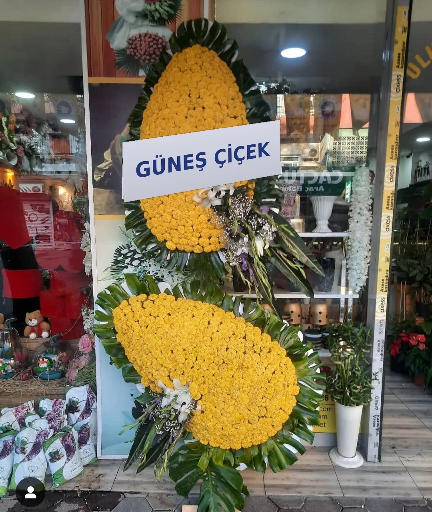

Aynı Gün TeslimatGC-DUV-08
Aynı Gün TeslimatGC-DUV-08
Adana Güneş Çiçek
Adana Açılış Çelenkleri
Yeni bir işe başlayan dostlarınıza, iş ortaklarınıza ya da müşterilerinize "hayırlı olsun" demenin en şık yolu. Açılış çelengi ve ferforje aranjmanlarımızı isminiz veya firma adınızla, açılış saatinden önce teslim ediyoruz.

Aynı gün teslimatGerçek tasarımlarımız
Açılış Çelenkleri modelleri
Görseller mağazamızda hazırladığımız gerçek siparişlerdir. Ürün kodunu belirterek sipariş verebilirsiniz.


Ferforje mi, ayaklı çelenk mi?
Ayaklı açılış çelengi geleneksel ve gösterişli bir seçenektir; iş yerinin girişinde uzaktan dikkat çeker. Ferforje aranjmanlar ise daha modern ve şık bir görünüm sunar, açılıştan sonra iç mekânda da kullanılabilir.
Her iki seçenekte de çelenk bandına isminizi, firma adınızı veya kısa bir tebrik mesajınızı yazıyoruz. Firma renklerinize uygun çiçek seçimi için bilgi vermeniz yeterli.
Zamanında teslimat
Açılışlarda zamanlama her şeydir. Siparişinizi alırken açılış saatini ve adresi teyit ediyor, çelengi tören başlamadan önce yerine ulaştırıyoruz. Toplu ve kurumsal açılış siparişleri için de bizimle iletişime geçebilirsiniz.
Bu hizmette neler var?
- Ayaklı çelenk ve ferforje seçenekleri
- İsim / firma adı yazılı bant
- Kurumsal renklerde tasarım
- Açılış saatinden önce teslimat
- Toplu sipariş imkânı
Nasıl sipariş verebilirim?
Açılış Çelenkleri siparişiniz için 0542 486 37 01 numaralı telefondan bizi arayabilir, aynı numaraya WhatsApp'tan yazabilir ya da Instagram'da @gunescicekadana hesabımıza mesaj gönderebilirsiniz. Teslimat adresini, tarih–saati ve kart notunuzu iletmeniz yeterli.
Sıkça sorulanlar
Açılış Çelenkleri hakkında
Çelenk bandına ne yazılıyor?
Gönderen kişi veya firma adı ile isterseniz "Hayırlı Olsun", "Bol Kazançlar" gibi kısa bir tebrik mesajı yazılır. Metni siparişte bize iletmeniz yeterli.
Açılış çelengini aynı gün sipariş edebilir miyim?
Uygunluk durumuna göre aynı gün hazırlayıp teslim edebiliyoruz. Açılış saatinden mümkün olduğunca önce bizi aramanızı öneririz.
Fatura kesiyor musunuz?
Kurumsal siparişlerinizle ilgili fatura ve ödeme detaylarını telefonla ya da WhatsApp üzerinden bizimle görüşebilirsiniz.
Hemen sipariş verin
Çiçeğiniz bir mesaj uzağınızda
Hangi çiçeği seçeceğinizi bilemediniz mi? Bize yazın, vesileye ve bütçenize en uygun tasarımı birlikte belirleyelim.